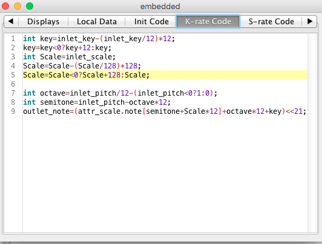

Where are the download links for the objects?
SirSickSik Contributions
SirSickSik
#523
have you upgraded to the latest version? (1.10.1 or something like that..)
when upgraded, the module-tree will contain 3 main folders:
-home
-contributions
-factory
my modules are in the folder:
contributions/sss/......
home/....... will be for your own created modules
factory/..... will hold all the factory modules that come along with the circuitboard/software
SirSickSik
#524
the "lotta-voice" midi recorder is starting to be quite a complex patch.
this one will definitely need a demo patch, but probably also quite a manual haha
though options to record, modify and create sequences will be in abundance 
Blindsmyth
#525
He thanks for the detailed answer.
I'm totally agreeing on you here. Keep it basic but open for external patching.
I think eventually I can apply some patching I did for audio loopers here, just counting the length of a loop in samples or clock ticks is no problem. So looking forward to see you recorder!
SirSickSik
#526
NEW MODULE
DELAY
"MSPPdelay"
mono to stereo pingpong delay with modulatable predelay and feedback time
-predelay sets the time the first delayed signal is fed to the output.
-feedtime sets the time for feedback after the predelay
-both can be modulated externally->use conv/interp module to convert control-rate signals to audio-rate for smooth low frequency modulation.
-modulation width can be attenuated with the AttMod selector (higher values will give smaller modulation ranges)
with their respective controls, both predelay and feedback time can be made different between left and right delay channel, but summed time of left and right will stay the same.
the predelay can be added to the feedback signal to provide an extra "hit" into the decaying delay.
SirSickSik
#527
one of my axoloti's still running the old firmware and has an old glitch-fx patch in it, using only native modules, seriously limiting the size of the patch, so I'm building a dedicated glitch module:
{kind=link}
the fx of all connected inputs are done, now over to the next ones 
ps. stereo audio is saved into a 32bit array as two 16 bit channels
cpu use will be very high in this module, as I want it to be as powerful as possible and use this axoloti circuitboard as a stand-alone glitch-fx box.
accompanying modules will provide polyphonic aftertouch-record for all effects (each effect is controlled by it's own midi-note(s))
any other fx-ideas are welcome (basic effect operations that is, combining these already has a huge potential of soni power)
also added:
- granuliser
- scratcher
- pitchshifter
now 16 effects with 29 controls 
still room for more..
SirSickSik
#528
new complex modules are doing well (poly sequencer and glitch fx), still adding features though.
small update:
poly sequencer:
-plays up to 32 midi notes at the same time
-next to gate, note and velocity, also midi-channel and midi-device can be recorded with each note -> internal, external usb port1/2/3/4, external DIN or external usb device.
-external modules can be used to modify/copy/transpose sequences.
-a little downside: I did not manage to record incoming polyphonic midi, only the record/playback is polyphonic.
glitch-fx: at this moment, there are 27 parameters to control 13 effects. FX can be used all at the same time for ultimate destruction of the original soundsource. An accompanying midi note/aftertouch recorder-module can be loaded for every single parameter input. Whenever any parameter of an effect is controlled, the effect goes on and uses the recorded CV's, If a particular automated CV is not on at the same moment the effect goes on, it uses the last outputted CV of the automation.
The automation recorded has extra inputs to:
-set record on/off. When on, records automation when gate goes high. When off, doesn't record, but sends incoming CV thru to output (for live-play, bypassing the recorded automation)
-instantly clear the recording (resetting all the automations at the same time)
-delete automation at current play-position when gate goes high on the respective recording module
-delete the whole automation when gate goes high on the respective recording module
jaffasplaffa
#529
Hey @SirSickSik
Was wondeting about the Scalebank object. As it is now it can only contain 46 scales. But I was wondering if it would be possible to add more scales to it?
I was looking at the number "int note[552]"..... When I devide 552 with 46 i get 12. And every scale need 12 numbers, thats why some of the number in the scales are repeated, rIght? Like this one 0,0,2,2,4,5,7,7,9,9,11,11,
So now I am wondering if I want to have 100 scales for example, could I increase that number 552(46X12) to 1200(100X12) and then get 100 scales in the object?
Is that how it works?
Thanks 
SirSickSik
#530
yes, and then just add the other scalings like the way I do overthere.
though, I just found a mistake in the 46scales module, the key needs to be subtracted by 4 to play in C. (ps. I also just fixed this, sorry if I messed up somebody's patch.. just add 4 to your key to fix it..
This way, the first entry in the row is C, followed by C#,D etc etc up to B.
I've got the scalings from wikipedia and tried to make the best fits/spread for each scale over the 12 notes, so they would all cover the whole octave.
jaffasplaffa
#531
Thanks man. I guess I would also need to change some number in the 46 scales object. That looks pretty straight forward. Maybe Ill get back to you when I get to it.
Yes I really like the object. But I am "reprogramming" it with new scales and also include the names of scales for easier matching with chords. I collected more than 100 different scales from a page which I am working on adding to yuor object. First Ill make the 46 and then get to adding more scales.
I learned to copy objects to my local drive so no changes here... I compared to another scale subpatch I also made and it didnt seem to be off key. Anyway.. will check up on it later and fix it if so......
jaffasplaffa
#532
I might as well ask right away:
In the 46 scales object. I would basically only need to change everywhere it says "46" to for example 100 if I want 100 scales?
Thanks
SirSickSik
#533
yes that's right
as for the key-offset..
when playing a midi-middle-C, the semitone-value isn't a zero (or octaves up/down), but four (and octaves up/down).
The midi "zero" value is A. So what you would actually be doing, is playing in Aminor instead of Cmajor. Notationwise, this could be very misleading when trying to mix different hardware equipment, each with their own scaler.
Also, you should keep track of the root-pitch of the oscillator. When pitch is 0, it plays an E. So this one should be set to -4 too, when you want to play an actual "C".
jaffasplaffa
#534
DOesnt the pitch inlet sweep through the scale? That is the behaviour I get here.
It seems like it is the key that offsets the scale by half tones, right? So it is the key that needs to be offset?
Or maybe I am not getting it right. There is not much documentation on it.
jaffasplaffa
#535
Just tried expanding it up to 128 scales. Using 12*128 = 1536
Seems like the output is shifted +1. So it doesnt show zero it shows 1 when set to zero. And the output value also jumps in a weird when when going beyond an octave with the pitch inlet. When it is supposed to show 12 it jumps to zero and then proceed up. Argh hard to explain.
I edited the 46 scales to look like this. Dunno if I have done everything right. I only edited where it said "46". I changed that to "128". Should I do something else?

Argh, anyway.. Tired now. Maybe Ill try again tommorow...
SirSickSik
#536
well, that's probably the thing with the key-shift, that needs to be subtracted with 4 I guess.
jaffasplaffa
#537
It works fine on the regular version. Atleast the one I have here in my local library.
Anyway. Maybe i made an error while making it will test again.
Edit: Ups was a typing error.... Sorry... 128 works.
SirSickSik
#538
NEW MODULE
DIST
"octaver"
incoming signal gets rectified, of which the rectified part has a gain of 2. Then this goes through a lowpass and highpass filter and is added to the original signal.
Using stack, this function is repeated multiple times, stacking octaving upon octaving up to 16 times. The "stack" parameter is a continuous parameter, smoothly mixing in/out any newly added/removed stage.
All parameters are modulatable
SirSickSik
#539
NEW MODULE
DIST
"subOctaver"
octaver with sub-octaver
Gain and feed control the amount of higher frequencies being added to the signal by the octaver algorithm.
Sub controls the volume of the sub-frequency being added
srate controls the rate of the up/down slopes of the sub (dampening higher harmonics that are created by the sub)
Stage controls the sub-frequency-divider amount
Damp controls the cutoff frequency of the internal 12dB lowpass filter
Crossfade mixes between original and modified signal
All parameters are externally controllable and are linear interpolated to audio-rate.
SirSickSik
#540
NEW MODULE
DIST
"octavius" (an extended version of the subOctaver)
octaver/harmonizer with several different functions used together to generate all kinds of lower and higher harmonics.
Gain and feed control the amount of higher frequencies being added to the signal
Sub controls the volume of the sub-frequency being added
srate controls the rate of the up/down slopes of the sub (dampening higher harmonics that are created by the sub)
Stage controls the sub-frequency-divider amount
Cutoff controls the cutoff frequency of the internal 12dB lowpass filter(2x 6dB) or SVF-filter
Using the svf-toggle-switch, you toggle between 12dB filter (off) and SVF-filter (on)
The svf-filter has a resonance-control (isn't used with the 12dB filter)
Mode selects between lowpass (left) and bandpass (right) filter.
The 12dB filter functions mostly as a dampening filter to remove higher frequencies and to soften the signal.
The SVF-filter adds a lot of resonance and enables the effect to scream quite a bit.
Blindsmyth
#541
He, subOctaver and ovatvius sound really interesting, however I can find neither of them in the community library or on github.